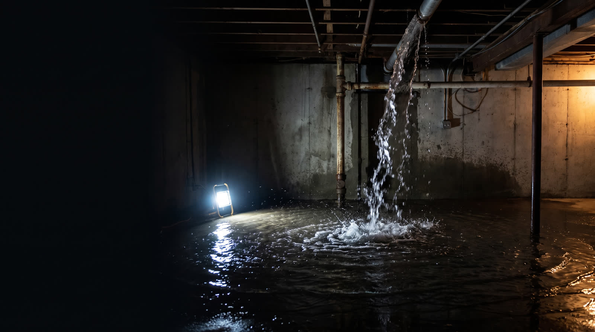

Urgence · 24 heures sur 24 Emergency · 24 hours a day
Un sinistre n’attend pas le matin. A loss will not wait until morning.
Dégât d’eau, incendie, moisissure. Une personne répond, maintenant — et vous dit quoi faire avant même qu’on arrive. Water damage, fire, mould. A person answers, right now — and tells you what to do before we even arrive.
1 877 657-4647Une personne répond · il est — à Montréal A person is answering · it is — in Montréal
- Licence RBQRBQ licence 5834-5539-01 Vérifiable au registre de la Régie du bâtimentVerifiable in the Régie du bâtiment registry
- CertificationCertification IICRC Techniciens certifiés en restaurationCertified restoration technicians
- DécontaminationDecontamination Santé publiquePublic health Spécialistes reconnus en décontamination biologiqueRecognized biological decontamination specialists
- DisponibilitéAvailability 24 / 7 / 365 Jours fériés comprisHolidays included
L’interventionThe intervention
Ce qui se passe dès l’appel What happens the moment you call
Les deux premiers temps limitent les dégâts. Les deux suivants décident de ce que votre assureur remboursera. The first two stages limit the damage. The last two decide what your insurer will cover.
-
01
Une personne répondA person answers
À toute heure, 365 jours par année. On établit la nature du sinistre et ce que vous devez faire tout de suite — couper l’eau, couper le courant, ne pas réintégrer les lieux. At any hour, 365 days a year. We establish the nature of the loss and what you must do right away — shut off the water, shut off the power, do not re-enter.
-
02
On arrête la source et on sécuriseWe stop the source and secure
Extraction et pompage, barricadage des ouvertures, bâches sur les toitures et murs endommagés, confinement des zones contaminées. Tant que la source coule, tout le reste est inutile. Extraction and pumping, boarding up openings, tarps over damaged roofs and walls, containment of contaminated areas. While the source is still running, everything else is pointless.
-
03
On mesure et on documenteWe measure and document
Thermographie infrarouge pour repérer l’humidité derrière les finitions, tests de qualité de l’air, relevés photographiques. C’est ce dossier qui appuie votre réclamation. Infrared thermography to find moisture behind finishes, air quality testing, photographic records. This file is what supports your claim.
-
04
On assèche et on décontamineWe dry and decontaminate
Déshumidificateurs et ventilateurs industriels, traitement antimicrobien, filtration HEPA, tests de qualité de l’air avant et après. Les lieux vous sont rendus sains. Dehumidifiers and industrial air movers, antimicrobial treatment, HEPA filtration, air quality testing before and after. The premises are handed back safe.
Les servicesServices
Ce qu’on traite en urgence What we handle as an emergency
Après-sinistrePost-loss
Dégât d’eauWater damage
Extraction, assèchement et restauration après inondation, refoulement ou fuite.Extraction, drying and restoration after flooding, backup or leak.
Incendie et fuméeFire and smoke
Nettoyage des suies et résidus de combustion, désodorisation, traitement et filtration de l’air.Soot and combustion residue cleaning, deodorization, air treatment and filtration.
MoisissureMould
Détection, confinement, décontamination et traitement antimicrobien préventif.Detection, containment, decontamination and preventive antimicrobial treatment.
Nettoyage après sinistrePost-loss cleaning
Surfaces, contenu, biens personnels et assainissement des lieux.Surfaces, contents, personal belongings and sanitizing of the premises.
Barricadage et vandalismeBoard-up and vandalism
Sécurisation des ouvertures, clôtures temporaires, protection contre les intempéries.Securing openings, temporary fencing, weather protection.
Scène de traumaTrauma scene
Intervention discrète, en tenue civile et sans marquage sur les véhicules si demandé.Discreet intervention, plain clothes and unmarked vehicles on request.
DécontaminationDecontamination
Agents biologiques, chimiques ou environnementaux. Filtration HEPA, produits homologués Santé Canada.Biological, chemical or environmental agents. HEPA filtration, Health Canada approved products.
PréventionPrevention
Recherche de cause d’infiltrationInfiltration source investigation
Thermographie, test d’étanchéité par pluie contrôlée, endoscopie. On trouve la source avant que vous payiez des travaux.Thermography, controlled water testing, endoscopy. We find the source before you pay for any work.
Inspection préventivePreventive inspection
Toiture, fondations, plomberie, drainage et qualité de l’air, avec rapport priorisé.Roof, foundations, plumbing, drainage and air quality, with a prioritized report.
Plan de préventionPrevention plan
Audit de risques, procédures d’urgence, formation des occupants et révision annuelle.Risk audit, emergency procedures, occupant training and annual review.
Les avisReviews
4,7 sur 15 avis Google 4.7 from 15 Google reviews
« The Sinistr team is truly exceptional and genuinely cares about its clients. They exceeded all of our expectations! »
Avis publié sur Google, reproduit sans retouche. Les autres avis de la fiche ont été rédigés en français puis traduits automatiquement : ils seront ajoutés ici dans leur version française d’origine. Review published on Google, reproduced unedited. The other reviews were written in French and machine-translated: they will be added here in their original French.
Le territoireService area
Trente-six secteurs Thirty-six areas
L’île de Montréal, l’Ouest-de-l’Île, Laval, la Rive-Nord et la Rive-Sud. The island of Montréal, the West Island, Laval, the North Shore and the South Shore.
- Montréal
- Montréal-Ouest
- Montréal-Est
- Plateau-Mont-Royal
- Rosemont
- Villeray
- Ahuntsic
- Saint-Laurent
- Dollard-des-Ormeaux
- Pointe-Claire
- Kirkland
- Beaconsfield
- Vaudreuil-Dorion
- Laval
- Chomedey
- Sainte-Rose
- Vimont
- Longueuil
- Brossard
- Saint-Lambert
- Greenfield Park
- LeMoyne
- Boucherville
- Saint-Bruno
- Saint-Basile-le-Grand
- McMasterville
- Terrebonne
- Mascouche
- Repentigny
- L’Assomption
- Lavaltrie
- Boisbriand
- Rosemère
- Sainte-Thérèse
- Blainville
- Saint-Jérôme
Avant qu’on arriveBefore we get there
Les gestes qui limitent les dégâts The moves that limit the damage
La moisissure peut se développer en 24 à 48 heures après un dégât d’eau. Ce que vous faites dans les premières minutes pèse sur tout le reste — y compris sur ce que votre assureur acceptera. Mould can develop within 24 to 48 hours of water damage. What you do in the first few minutes weighs on everything that follows — including what your insurer will accept.
Dégât d’eauWater damage
- Coupez l’eau et l’électricitéShut off the water and the power
- Documentez les dommages avec des photosDocument the damage with photographs
- Appelez votre assureur et un expert certifiéCall your insurer and a certified specialist
Incendie et fuméeFire and smoke
- Ne réintégrez pas les lieux sans autorisationDo not re-enter without authorization
- Aérez dès que possible pour évacuer la fuméeVentilate as soon as possible to clear the smoke
- Contactez votre assureur dans les 24 heuresContact your insurer within 24 hours
MoisissureMould
- Inspectez les zones humides — sous-sol, salle de bainInspect damp areas — basement, bathroom
- Ne touchez pas la moisissure sans protectionDo not touch mould without protection
- Faites appel à un expert pour la décontaminationCall a specialist for the decontamination
Nous joindreGet in touch
En urgence, appelez In an emergency, call
Le téléphone est le canal le plus rapide, à toute heure. Pour une demande qui n’est pas urgente, le formulaire suffit. The phone is the fastest channel, at any hour. For anything that is not urgent, the form will do.
1 877 657-4647